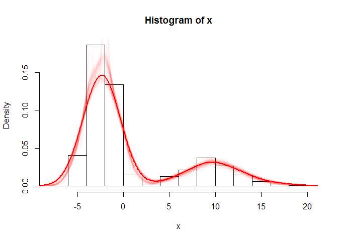
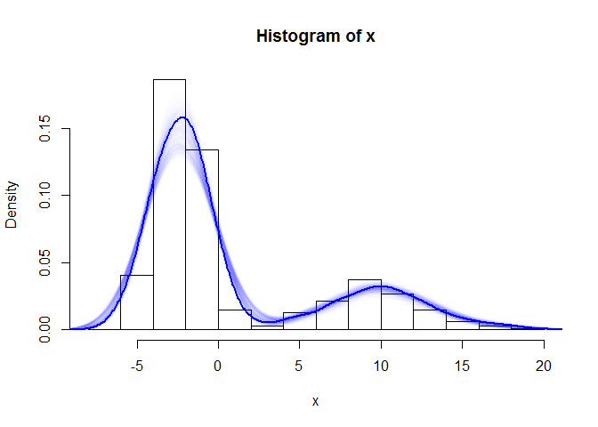

Here I explore basic kernel density estimation in R as a way to empirically estimate densities for data extracted from common SNAP data sets. This is just a toy example where I use simple simulations to investigate properties I am most interested in for the estimated distributions.
I often face the real-world problem of needing to rapidly summarize large amounts of data in an efficient manner without losing, skewing, or obscuring too much information. The context for this simulation is to show that it is possible to estimate an empirical distribution of a variable by a small set of points roughly defining the density curve, which can then we used in conjunction with linear approximation and bootstrap resampling to simulate new draws from the estimated distribution. The process can stop here if it is a sample that is required, or, in turn, an arbitrarily large sample drawn can be used to re-estimate the density more smoothly.
For some applications this is not useful, as the original data are already available. Their distribution can be estimated in the most appropriate manner the first time around. However, this delay in the chain of data propagation is extremely helpful when I am trying to provide real-time summaries of large data sets on demand, the quintessential example being my R Shiny web applications.
Particularly, in the case of trying to rapidly summarize and graph full distributional information, as opposed to, say, a time series of mean values, some form of data reduction must take place upstream from the web application. At SNAP, we have long time series of high spatial resolution data that are too much to dump into a simple web application. Data can easily be externalized and specific data sets sourced by an app on demand, but it is especially helpful to avoid the crippling load times associated with forcing massive amounts of data into an app while a user is trying to interact with it.
Instead of loading a dataset, e.g., an R workspace file, containing a huge sample of data for some variable, it is much easier to:
This is especially an effective approach in the context of Shiny apps where the goal is to visually explore patterns and present information, and not to have tunnel vision for an exact value buried deep in a massive data set which is nevertheless riddled with uncertainty.
Currently a simple simulation is shown, followed by two typical use cases in which application of such a strategy proves very beneficial. For the use cases, R code is provided to show how this is done in practice with real data inthe context of actual projects.
The simulation is obviously not a robust analysis. Rather it is intended as a simple illustration of the process being utilized for data reduction in specific applications.
First simulate some data and perform some rudimentary density estimation.
set.seed(47)
x <- c(rnorm(1000, -3, 1), rnorm(500, -1, 1), rpois(500, 10)) # Simulate multimodal distribution
n <- 20 # default for density() is n=512
den.smooth <- density(x, adjust = 1.5, n = n) # I tend to smooth it a bit
den <- density(x, adjust = 1, n = n) # But I store one without additional smoothingThe first plot shows a histogram of the original simulated data, overlain with boostrap resamples drawn from the crudely estimated density, and finally, a new density estimation performed post-bootstrap. The second plot shows the same, but incorporates an intermediary step involving linear approximation. This allows the subsequent draws to be more continuous.
# win.graph(10,5) layout(matrix(1:2,1,2))
# hist(x, freq=F) lines(den.smooth, lwd=2) # my preferred smoothed density
# estimate based on x
hist(x, freq = F)
for (i in 1:1000) {
# reproducing a sample from distribution of x based on den which I carry
# through my code
sample.boot <- sample(den$x, size = 1000, prob = den$y, rep = T)
lines(density(sample.boot, adjust = 1), lwd = 1, col = "#FF000001") # No extra smoothing with smaller samples
# print(i)
}
# A larger bootstrap sample will pin down the distribution accurately enough
# if necessary
sample.boot <- sample(den$x, size = 10000, prob = den$y, rep = T)
lines(density(sample.boot, adjust = 1.5), lwd = 2, col = "#FF0000") # smoothing affordable
# As before but adding an approx() step
hist(x, freq = F)
for (i in 1:1000) {
ap <- approx(den$x, den$y, n = 1000) # reintroduce interpolation before sampling
sample.boot2 <- sample(ap$x, size = 1000, prob = ap$y, rep = T)
lines(density(sample.boot2, adjust = 1), lwd = 1, col = "#0000FF01")
# print(i)
}
sample.boot2 <- sample(ap$x, size = 10000, prob = ap$y, rep = T)
lines(density(sample.boot2, adjust = 1), lwd = 2, col = "#0000FF")
Temperature and precipition data from SNAP’s downscaled climate models are often used to make inferences about future trends and uncertainty among potential climate scenarios. This generally is done by looking at specific statistics culled from the model outputs, usually the mean value over some combination of factors of interest such as seasonal period or geographical region. But what about when we want to look at an entire distribution of data at once? Furthermore, we want to visualize many distributions in quick succession, distributions of temperature or precipitation from different months, seasons, years, decades, locations, climate models, scenarios, etc.
This is a case where I extract a relatively coarse density estimate a priori. Subsequently, this small, stored estimate, is what is actually used to regenerate an accurate simulation of the original model output. This means no inefficient, slow lugging around of big data. Compress it down, release it in similar to original form later.
The following is used in the AR4_AR5_extract.R script which is part of the SNAP data QA/QC project and feeds into the Shiny app for comparing CMIP3 and CMIP5 downscaled climate model outputs. There is a function for estimating densities. In this case I wanted to avoid any NA values and for precipitation I wanted to ensure densities did not include positive probability over any interval containing negative values. The only other variable being analyzed was temperature. Things like this are important to code for in nuanced ways when the goal is to apply such a function to a large number of datasets. Effort must go into dealing with rare idiosyncrasies in the data and their effects.
denFun <- function(x, n, variable) {
x <- x[!is.na(x)]
dif <- diff(range(x))
z <- density(x, adjust = 2, n = n, from = min(x) - 0.05 * dif, to = max(x) +
0.05 * dif)
if (variable == "pr" && any(z$x < 0))
z <- density(x, adjust = 2, n = n, from = 0, to = max(x) + 0.05 * dif)
as.numeric(c(z$x, z$y))
}On the other end, in this case tucked within the aforementioned Shiny app, the function, density2bootstrap is used to simulate new draws from the estimated density. This is much faster and more efficient than trying to load an enormous data set. In this app, the ggplo2 graphics rely on the sample for plotting which is why the bootstrapping occurs following loading of the density estimate, and why there is no subsequent code for fitting a new density estimate to the bootstrap sample.
density2bootstrap <- function(d, n.density, n.boot = 10000, interp = FALSE,
n.interp = 1000, ...) {
n.fact <- n.boot/n.density
n.grp <- nrow(d)/n.density
d$Index <- rep(1:n.grp, each = n.density)
d2 <- data.frame(lapply(d, rep, n.fact), stringsAsFactors = FALSE)
prob.col <- which(names(d2) %in% c("Prob", "Index"))
d2 <- d2[order(d2$Index), -prob.col]
d2$Val <- as.numeric(vapply(X = 1:n.grp, FUN = function(i, d, n, interp,
n.interp, ...) {
p <- list(x = d$Val[d$Index == i], y = d$Prob[d$Index == i])
if (interp) p <- approx(p$x, p$y, n = n.interp)
round(sample(p$x, n, prob = p$y, rep = T), ...)
}, FUN.VALUE = numeric(n.boot), d = d, n = n.boot, interp = interp, n.interp = n.interp,
...))
d2
}However, for a complete picture of how these functions work together, it is important to see the documentation for the projects of which they are a part.
The motivation and the context for vegetation area and age distributions from SNAP’s ALFRESCO model ouput are the same as with use case one. However, the data are different. Through preliminary investigation, I can make changes to my approach, such as requiring a greater initial sample size or some other change that will maintain accuracy, which conceivably will differ for different random variables, data sets, and forms of variability and uncertainty involved. In this case I do something very similar to above.
As in the case of climate, there is a similar function for estimating densities storing only minimal information. However, with this data there were more things to look out for, such as entirely missing data or all data consisting of a single unique value (e.g., all modeled vegetation ages in one subregion are the same age in the ALFRESCO model), and how these situations are to be handled.
Furthermore, depending on how they are handled, which to some extent depends on how I eventually plan to use these estimated distributions, there are different potential consequences arising from other internal forms of sample. For instance, if all cells in a map layer of a given vegetation class are of the same age, do I want to sample with some kernal located on that value, knowing that these ages are not all the same in reality? On the other hand, I could return nothing but NA values if I am not satisfied with certain circumstances, as shown in the subsequent version of denFun which is applied to vegetated area rather than age.
denFun <- function(x, n, min.zero = TRUE, diversify = FALSE) {
x <- x[!is.na(x)]
lx <- length(x)
if (diversify && length(unique(x)) == 1)
x <- rnorm(max(10, lx), mean = x[1]) # diversify constant values
if (lx == 1)
x <- x + c(-1:1) #single pixel of veg type, add and subtract one age year to make procedure possible
dif <- diff(range(x))
z <- density(x, adjust = 2, n = n, from = min(x) - max(1, 0.05 * dif), to = max(x) +
max(1, 0.05 * dif))
if (min.zero && any(z$x < 0))
z <- density(x, adjust = 2, n = n, from = 0, to = max(x) + max(1, 0.05 *
dif))
as.numeric(c(z$x, z$y))
}denFun <- function(x, n = 20, min.zero = TRUE, diversify = FALSE, missing.veg.NA = TRUE,
fire = FALSE) {
if (all(is.na(x)))
return(rep(NA, 2 * n))
x <- x[!is.na(x)]
lx <- length(x)
if (sum(x) == 0 & missing.veg.NA & !fire)
return(rep(NA, 2 * n))
if (diversify && length(unique(x)) == 1)
x <- rnorm(max(10, lx), mean = x[1]) # diversify constant values
if (lx == 1)
x <- x + c(-1:1) #single pixel of veg type, add and subtract one age year to make procedure possible
dif <- diff(range(x))
z <- density(x, adjust = 2, n = n, from = min(x) - max(1, 0.05 * dif), to = max(x) +
max(1, 0.05 * dif))
if (min.zero && any(z$x < 0))
z <- density(x, adjust = 2, n = n, from = 0, to = max(x) + max(1, 0.05 *
dif))
as.numeric(c(z$x, z$y))
}btfun <- function(p, n.samples = length(p)/2, n.boot = 10000, interp = FALSE,
n.interp = 1000, ...) {
if (!length(p))
return(p)
if (all(is.na(p)))
return(rep(NA, n.boot))
p <- list(x = p[1:n.samples], y = p[(n.samples + 1):(2 * n.samples)])
if (interp && length(unique(p[1:n.samples])) > 1)
p <- approx(p$x, p$y, n = n.interp)
p <- round(sample(p$x, n.boot, prob = p$y, rep = T), ...)
p
}Again, there is another case of bootstrap resampling from the estimated distributions to arrive at new simulated, representative draws from the original distribution. Think of it like teleporting to your destination instead of walking, specifically when you have a heavy pack. As with use case 1, it is helpful to see the documentation for the ALFRESCO output extraction and related projects to which these functions belong.